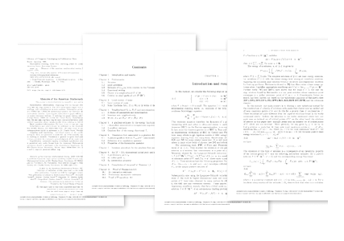

주제별 연구성과
주제별 연구성과
KAIST RESEARCH ACHIEVEMENTS
비선형 슈레딩거 방정식의
다중요철해의 구성을 위한
극한문제의 비퇴화성에
의존하지 않는 변분법의 개발
수리과학과 변재형
요약
편미분방정식에서 특정매개변수가 아주 작거나 클 경우 대응되는 현상으로 아주 특별한 해의 존재성이 기대된다. 이러한 현상은 수많은 수학적 모델에서 나타난다. 이런 특별한 해들은 많은 경우 적당한 정규화 과정을 거치면 어떤 보다 단순한 극한 편미분방정식 문제의 해로 수렵할 것이다. 이런 경우 해의 존재성은 그 단순한 편미분방정식의 구조에 아주 민감하게 의존한다. 극한 편미분방정식의 어떤 구조적인 안정성이 해의 존재를 증명하는 일반적인 방법론 연구는 아주 근본적인 문제로 관련분야의 연구에 초석이 될 것이다. 이런 일반적인 방법론의 연구와 더불어 구체적인 다양한 수학적 모델에 대한 적용을 연구한다.
연구내용
현대에 새롭게 태어난 양자역학은 뉴튼에 의해 시작된 고전역학을 잘 근사한다. 이것은 양자역학의 기본이 되는 슈레딩거 방정식에 프랑크 상수라는 아주 작은 상수가 어떤 국소화의 역할을 함에 기인한다. 이런 종류의 이해는 패턴 형성에 관한 튜링의 결과에서도 볼 수 있듯이 현대 과학에 있어 아주 보편적으로 되었다. 그러므로 연속 현상을 기술하는 아주 많은 편미분방정식이 아주 크거나 작은 상수를 포함하고 있다. 그래서 이제 그런 방정식을 다루는 아주 일반적인 방법론의 개발이 아주 중요하고 앞으로 근본적인 역할을 할 것이다.
비선형 슈레딩거방정식은 많은 물리적 모델에서 유도되는 방정식으로 많은 수학적 연구가 이루어져 왔다. 특이섭동된 비상수 포텐셜을 가지는 슈레딩거방정식은 제한된 경우의 비선형 항에 대하여 포텐셜의 극소점이 아닌 임계점에 다중요철 모양의 정상파 해를 가지는 것이 알려져 있다. 하나의 요철모양을 이루는 슈레딩거방정식의 정상파의 존재성에 관한 수학이론은 많이 개발되어 왔다. 하지만 이런 다중요철 모양의 정상파해 존재성 연구에서는 극한문제의 비퇴화성이 성립하는 제한된 경우에만 적용되는 리아푸노프-쉬미트의 차원 축소방법 외에는 어떠한 방법론도 개발되지 않았다. 본 연구에서는 극한문제의 비퇴화성에 의존하지 않는 전혀 새로운 변분법적 방법론을 개발하여 가장 일반적인 비선형 항을 가진 경우에도 극소점이 아닌 임계점에 다중요철 모양의 정상파 해를 가지는 것을 증명하였다.

 그림 3. 새롭게 개발한 방법론은 여러 극한 문제의 비퇴화성을 확인하기 어려운또는 성립하지 않는 여러 다른 종류의 문제에도 적용할 수 있어 활용 범위가 크다.
그림 3. 새롭게 개발한 방법론은 여러 극한 문제의 비퇴화성을 확인하기 어려운또는 성립하지 않는 여러 다른 종류의 문제에도 적용할 수 있어 활용 범위가 크다.
연구실적
ㆍMemoirs of the American Mathematical Society' 단독 volume 으로 출판
참고자료
ㆍ논문: Jaeyoung Byeon and Kazunaga Tanaka, Semiclassical standing waves with clustering peaks for nonlinear Schrodinger equations, 229(2014), no. 1076, Memoirs of the American Mathematical Society(IF = 1.782)
연구지원
ㆍ한국연구재단, 중견연구